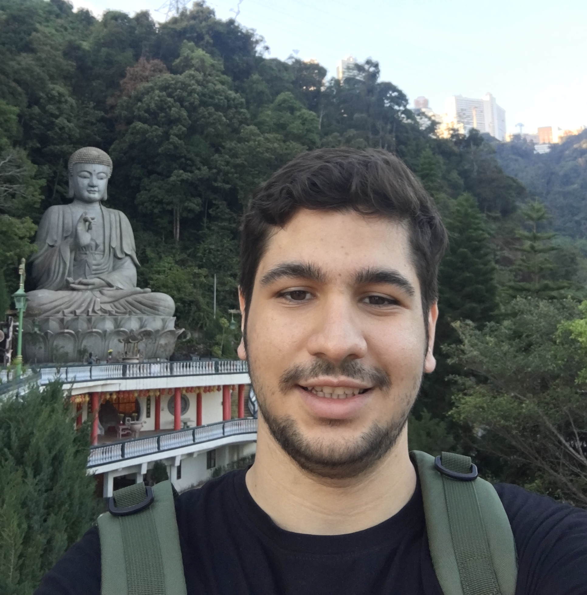

Email : "hossein.ebrahimiko" at "gmail.com"
CV : PDF - Updated: Nov. 2020
Github : HosseinEbrahimiK
Hi! My name is Hossein Ebrahimi-Kondori and I am a BSc student at Sharif University of Technology. I am currently a Machine Learning research assistant at Machine Learning Lab under the supervision of Prof. Mahdieh Soleymani. I'm interested in latent variable models, variational inference, genomics, and medical imaging. My long term research goal is to combine machine learning with novel sources of data to develop new tools for improved diagnosis and treatment of patients.
Machine Learning Lab at Sharif University of Technology
| Research Assistant Under Supervision of Prof. Mahdieh Soleymani | Jul. 2020 - Present |
Institute of Computational Biology at Technical University of Munich
| Research Assistant Under the Supervision of Mohammad Lotfollahi | Sep. 2020 - Present |
Online Courses
Courses
The ones I’ve really enjoyed so far at the Sharif University of Technology:
Teaching Assistant
DataDays
| Scientific Staff | December 2019 - March 2020 |
Sharif University of Technology
| B.Sc. in Computer Engineering | 2016 - Expected: 2021 |
Allameh Tabatabaei High School
| Diploma in Mathematics and Physics | 2012 - 2016 |